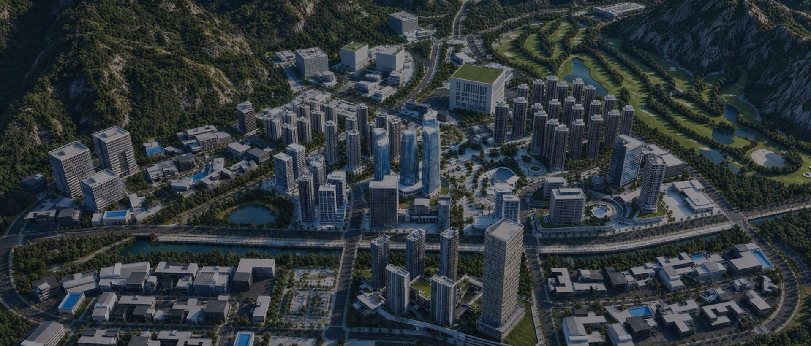
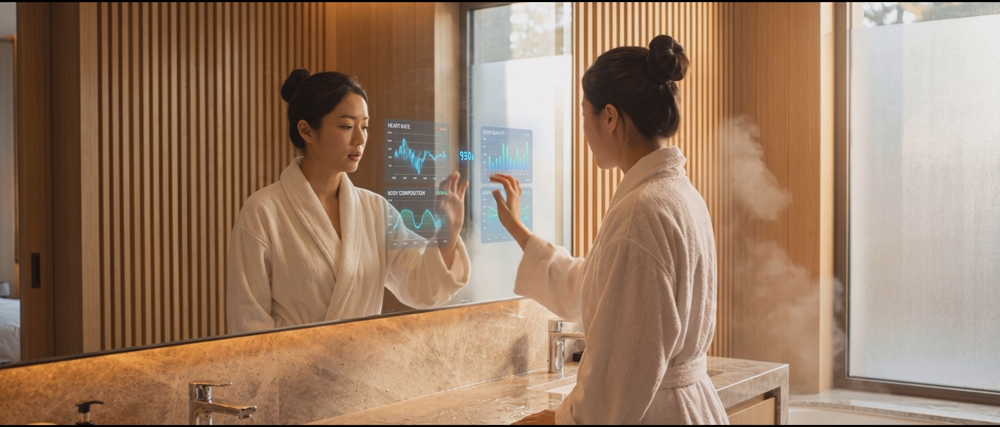
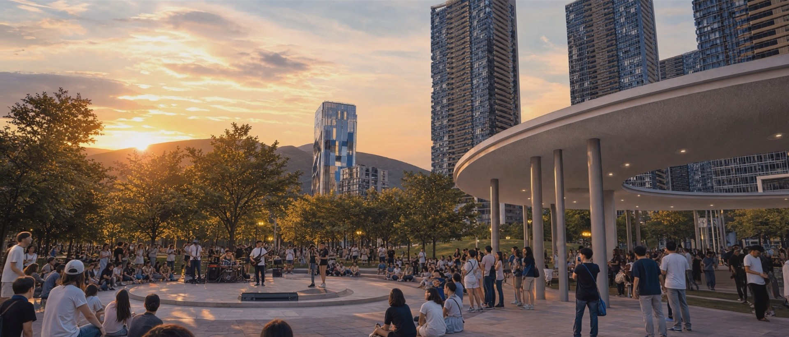

도시소개 · 정주환경

LIVING정주환경
일과 삶이 조화롭게 어우러지는 곳
비즈니스 · 주거 · 교육 · 문화가
하나로 완성되는 자족도시
네 가지 환경이 서로를 받쳐 주며 하루를 완성합니다

01Business Environment
비즈니스 환경
일하기 좋은 도시

업무 · 연구 시설을 잇는 보행 가로 
단지를 순환하는 자율주행 셔틀
짧아진 출근길, 가까워진 협업, 그리고 일과 삶이 자연스럽게 이어지는 도시. B-CITY는 비즈니스의 새로운 환경을 제안합니다
-
#국가급특구
국가가 함께 만드는 비즈니스 기반B-CITY는 4대 국가급 특구가 지정된 도시입니다. 바이오 국가첨단전략산업 특화단지, AI 헬스케어 글로벌 혁신특구, 교육발전특구, 기회발전특구 · 강원연구개발특구. 세제 감면, 보조금 지원, 신속 인허가까지 기업이 마음껏 도전할 수 있는 환경이 이미 마련되어 있습니다.
-
#직주근접
여유로운 출퇴근 길직주근접 보행 네트워크가 도시 전체를 연결해, 복잡한 교통 체증도 긴 통근 시간도 없습니다. 출근길이 짧아진 만큼, 하루의 가능성은 더 크게 열립니다.
-
#광역접근성
서울도, 세계도 1시간 거리서울과의 미팅도, 양양국제공항을 통한 해외 출장도 모두 1시간이면 충분합니다. GTX-B · ITX · 고속도로가 연결되는 광역 교통망 위에서 B-CITY는 수도권의 모든 기회와 닿아 있고, 국제공항을 통해 세계와도 가장 가까이 연결됩니다.
-
#산학연협력
협업이 일상이 되는 도시도시 안에 입주한 기업, 연구 기관, 대학이 거리적으로도 일상적으로도 가까이 있습니다. 오전 회의가 끝나고 점심에 인근 연구진을 만나고, 오후에는 대학 캠퍼스에서 공동 프로젝트를 이어갑니다. 협력은 멀리 떠나야 하는 일이 아니라, 이 도시 안에서 자연스럽게 일어나는 일상입니다.

02Residential Environment
주거 환경
살기 좋은 도시
자연이 가까운 일상, 걸어서 누리는 편안함, 그리고 첨단 기술이 함께하는 주거 공간. B-CITY는 매일의 삶을 더 풍요롭게 만듭니다
-
#스마트 라이프
AI · IoT 기반 첨단 주거 환경AI와 IoT가 집안 곳곳에 스며들어 일상의 모든 순간을 더 편리하게 만듭니다. 조명 · 온도 · 보안은 자동으로 관리되고, 영양 관리 시스템이 건강한 식단을 챙기며, 통합 의료 생태계가 가족 모두의 건강을 살핍니다. 하이퍼엔드 시니어 하우징부터 일반 주거까지 첨단 기술이 만드는 새로운 주거 경험이 시작됩니다.
-
#보행친화도시
보행자 중심 도시 네트워크B-CITY의 보행자 중심 네트워크가 도시 전체를 자연스럽게 연결합니다. 아이의 등하굣길도, 출근길도, 장보러 가는 길도 모두 안전하고 가까운 거리 안에 있습니다. 복잡한 이동이 없는 일상에서 하루는 더 여유로워집니다.
-
#소셜믹스
다양한 주거 유형이 공존하는 도시단독주택, 공동주택, 주상복합까지 다양한 주거 유형이 한 도시 안에 공존합니다. 세대도 라이프스타일도 서로 다른 이웃들이 공원과 광장에서 자연스럽게 만납니다. 다양한 사람들이 어우러지는 풍경 속에서 건강한 동네 문화가 자라납니다.
-
#Green & Blue
자연 · 녹지 · 수변이 가까운 도시B-CITY는 도시 전체 면적의 26%가 공원과 녹지로, 어디서든 자연과 가까이 닿아 있습니다. 수변을 따라 산책하고, 도심 한가운데 펼쳐진 녹지를 가로질러 출근하며, 주말이면 바로 옆 자연으로 떠납니다. 자연이 가까운 만큼 일상은 더 깊어집니다.

스마트 미러로 확인하는 일상 정보 
보행 중심 가로를 걷는 가족

03Educational Environment
교육 환경
배움이 넘치는 도시

유리 회랑에서 바라본 도시
유치원부터 외국교육기관까지, 도시 안에서 이어지는 배움. 강원대 · 한림대 등 지역 대학과 함께하는 산 · 학 협력, 그리고 글로벌 인재가 모이는 교육 환경
-
#생애전주기 교육
유치원부터 고등학교까지, 한 도시 안에서아이가 처음 유치원에 들어서던 날, 그리고 고등학교를 졸업하는 날까지 — 모든 배움이 같은 도시 안에서 이어집니다. 「에듀포레스트 교육발전특구 춘천」과 연계된 생애 전주기 맞춤형 교육 시스템이 B-CITY의 아이들과 함께 성장합니다.
-
#글로벌교육
세계 수준의 교육이 가까이에「기업도시개발특별법」 제38조에 따른 외국교육기관 설립으로 글로벌 교육 환경이 도시 안에 마련됩니다. 해외로 떠나지 않아도 세계 수준의 교육을 누릴 수 있고, 국제적인 시야를 가진 인재가 자연스럽게 모이는 국제도시로서의 기반이 함께 만들어집니다.
-
#개방형교육
도시 전체가 학교가 되는 교육도시학교 안에서만 배움이 끝나지 않습니다. 도시 내 입주 기업, 연구 기관, 그리고 강원대 · 한림대 등 지역 거점 대학이 유기적으로 연결됩니다. AI 기반 진로 체험부터 산 · 학 공동 프로젝트까지, 교실 밖에서 만나는 진짜 배움이 B-CITY의 일상이 됩니다.

04Culture & Leisure
문화시설
쉼이 있는 도시
일과 가까운 곳에 펼쳐진 자연, 도심 한복판의 문화 광장, 그리고 가까이에서 만나는 골프와 관광 인프라. B-CITY는 일하는 시간만큼 쉬는 시간도 풍요롭게 만듭니다
-
#골프레저
일상이 된 골프 라이프남춘천 IC에서 3분, 서울에서 50분 거리. B-CITY 안에 자리한 285,000평 규모의 골프장에서 일상처럼 라운딩을 즐길 수 있습니다. 멀리 떠나야만 했던 골프가 출근길 같은 일상이 되는 곳. 가까이 있어 더 자주, 더 편하게 누립니다.
-
#문화광장
도시 한복판의 문화 거점비즈니스 콤플렉스 중심부에 자리한 문화시설은 상업 · 업무와 어우러진 도시의 문화 코어입니다. 전시 · 공연 · 이벤트가 이어지는 도심 광장은 출근길에도, 퇴근길에도 일상의 풍경이 됩니다. 문화를 만나기 위해 멀리 가지 않아도 되는, 가까이 있는 문화 공간이 펼쳐집니다.
-
#그린네트워크
도시 전체가 녹지로 채워진 도심 속 자연도시 면적의 26%가 공원과 녹지로 채워진 B-CITY. 어디서든 자연이 가까운 환경에서 일상의 모든 순간이 더 여유로워집니다. 산책로와 수변 공간, 도심 속 녹지가 이어져 출근 전 아침 산책도, 점심시간의 잠깐 휴식도 자연 속에서 즐길 수 있습니다.
-
#관광인프라
가볍게 떠날 수 있는 여행의 도시B-CITY 가까이에는 춘천이 자랑하는 대표 관광 · 레저 명소들이 자리하고 있습니다. 남이섬과 강촌, 김유정 문학촌, 의암호와 소양강, 그리고 비발디파크까지 — 차로 짧은 거리에서 사계절 내내 다채로운 즐거움을 누릴 수 있습니다. 주말마다 떠나는 여행이 멀지 않은 곳에서 시작되는, 관광 인프라가 가까운 도시입니다.

중앙 공원 야외 공연 
단지와 맞닿은 골프 코스